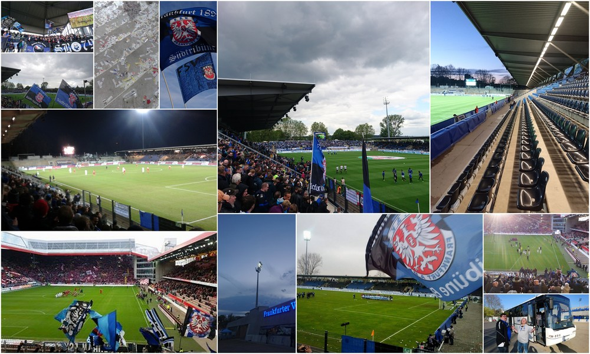
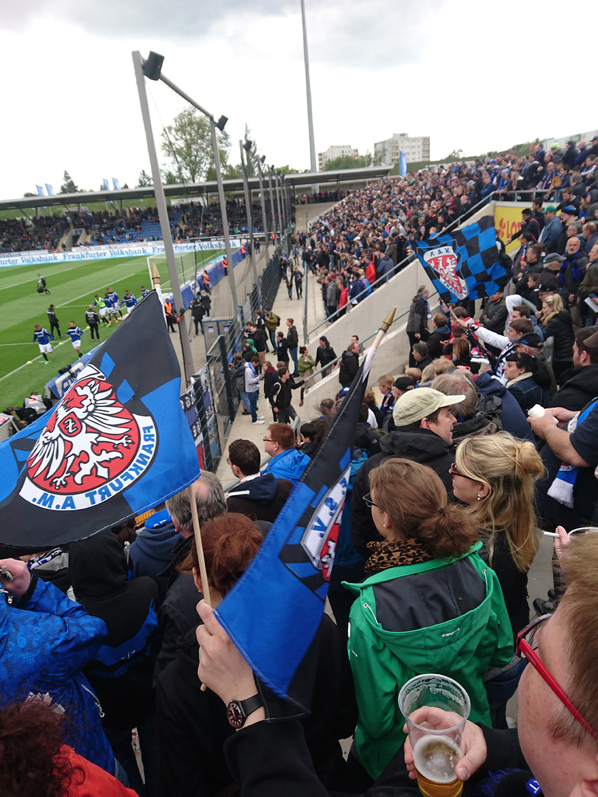
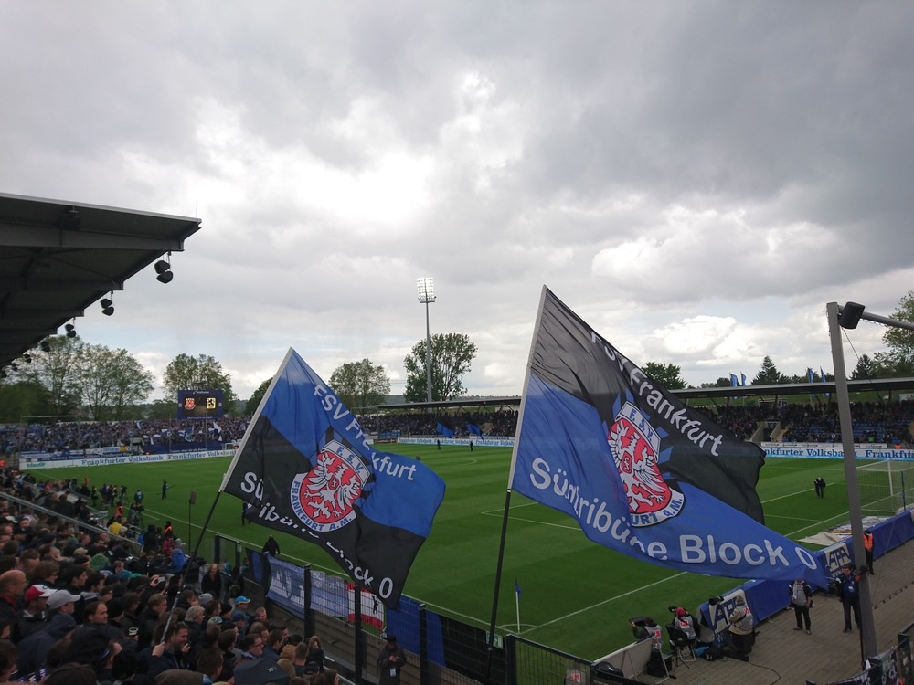

Marvin Mendel
Schreibt über: #Veranstaltungen #FSV #FFC #HalloFFM
Der FSV Frankfurt siegt mit 2:1 gegen 1860 München und muss trotzdem den Gang in die dritte Liga antreten - Ein Nachruf

9 Minuten mit der U-Bahn. Zu Fuß bin ich gut 25 Minuten unterwegs. Keine eng gedrängte S-Bahn, auf dem Weg keine Fangesänge, die mir wahlweise die Schamesröte ins Gesicht treiben oder die Wut in mir aufkommen lassen.
Ich fahre nicht an den Bornheimer Hang, weil ich tollen Fußball sehen will, muss keine extatischen Fanzustände begutachten. Ich bin hier, weil ich hier das Gras noch riechen kann. Nicht das im Mundwinkel meines Nachbarn, sondern das auf dem Spielfeld. Ich freue mich über kleine Schritte. Bin froh, wenn ich bemerke, dass in Block N und O immer mehr junge Menschen stehen. Dass die Fanszene langsam aber sicher wächst. Ich bin angetan, wenn die Spieler das tun, was man von ihnen am ehesten verlangen kann: rennen und kämpfen. Zum FSV zu gehen, bedeutet für mich auch, zu entschleunigen. Stressfrei kommt man selbst kurz vor dem Spiel noch an ein Ticket. Selten muss ich länger als fünf Minuten anstehen, will ich mir ein Kaltgetränk holen. Der Ebbelwoi ist besser als im großen Stadion im Stadtwald, die Bratwurst sowieso. Problemlos kann ich meinen Freund Malte fragen, ob er mit seinem 2-Jährigen Sohn ins Stadion gehen will, wenn sein Lieblingsverein Braunschweig mal am Bornheimer Hang zu Gast ist.
Dieser Verein hat Charme, etwas Bodenständiges. In Zeiten verrückter Transferzahlungen, durchkommerzialisierter Bundesligashows, Flagship-Fanstores und Brauseherstellern auf der Brust eines Bundesligisten, nordet der FSV den geneigten und mit Werbemaßnahmen überhäuften Fußballzuschauer wieder ein.
Natürlich rege ich mich trotzdem ständig auf. Ich schimpfe über die grausam schlechten Stadionlautsprecher, das vielleicht fürchterlichste Vereinslied der zweiten Liga, das Jingle bei Eckbällen. Und doch überkommt mich am Bornheimer Hang ein Gefühl der Heimeligkeit. Zudem die Möglichkeit, für 90 Minuten komplett abschalten zu können.
Der FSV Frankfurt ist nicht der Verein, der meine Gedanken bestimmt, mich schlecht schlafen lässt, mir Zeit, Nerven und Tränenflüssigkeit raubt. Aber er ist mir ans Herz gewachsen. Weil er so anders ist, mich entspannt lässt und mir gleichzeitig ein Tor zu einer anderen Fußballwelt öffnet. Durch den FSV kam ich regelmäßig in den Genuss traditionsreicher Vereine, die den Sprung zurück in die 1. Bundesliga (noch) nicht geschafft haben. Zum anderen sah ich hier junge Talente, die in der zweiten Liga ihre ersten Duftmarke setzten.
Der FSV wird wohl nie die Nummer 1 in Frankfurt werden. Gleichzeitig nervt der Verein aber auch nicht mit stilisierten Fanfehden, jugendlichem Machogehabe und künstlich aufgeheiztem Derbygequatsche. Er ist der platonische Freund, der auch mit dem festen Lebenspartner bestens auskommt. Dafür bin ich dem FSV dankbar. Er wird mir und auch der zweiten Liga fehlen. Sehr.
Die im Text geäußerten Ansichten sind lediglich die der/des VerfasserIn und entsprechen nicht den Meinungen der anderen AutorInnen dieser Website.
 
Vielen Dank an Franzi für die Bilder!

Schreibt über: #Veranstaltungen #FSV #FFC #HalloFFM
18.05.2016 10:07 Uhr
Sehr schön geschrieben! Denke mal, dass viele ähnlich empfinden.
Neue Antwort schreiben
18.05.2016 18:36 Uhr
Vollste Zustimmung zum Thema Entschleunigung. Wobei ich diese Entspannung bis auf den Kommerzscheiss auch bei der Eintracht im großen Stadion empfinde. Die Bratwurst fand ich jetzt beim FSV jetzt nicht so lecker, und da ich ja genau gegenüber wohne, bin ich auch schon mal nur wesche der Pommes hingegangen. Als Zaungast kann man da nämlich auch gut mitschauen.
Aber zur zweiten Liga: die müssen dann auch so spielen. Also nicht nur einmal, wenn das halbe Bein schon überm Abgrund schwebt, sondern dauerhaft. Dann überträgt sich das vielleicht auch mal auf die Fangesänge. Die Onkelz-Liederchen aus den 90ern sind jetzt auch nich so allererste Sahne Fischfillet, da müsste FFM doch eigentlich noch mehr bieten. "Aus eigener Kraft"! Die FSV-Marke ist auf jeden Fall nicht so unsympathisch und hat noch viel Potential.
Ich werde auch gerne zur 3. Liga hingehen und freue mich ganz besonders auf das Spiel vs. Werder Bremen II, aber gleichzeitig wünsche ich dem FSV, dass er mal aus seinen Fehlern lernt und seinen richtigen Platz findet. Es kann ja sein, dass die 3. Liga derzeit der richtige Ort dafür ist. Dann aber bitte auch mit gutem Fußball.
Neue Antwort schreiben
19.05.2016 10:00 Uhr
Moin,
ich finde mich in Deinem Text zum großen Teil wieder. Anmerken möchte ich noch, dass man beim FSV wie es sich gehört einfach seinen Abbel mit Westgeld bezahlt.
Aber ich sage Dir was: Einige der Punkte, die Du am FSV schätzt könnten der Grund dafür sein, dass sie eben nicht besonders erfolgreich und jetzt erst einmal abgestiegen sind - emotionale Distanz. So ziemlich jeder meines Eintracht Freunde findet den FSV OK / nett / sympatisch. Alle finden es irgendwie schade, dass sie abgestiegen sind.
Klar - auf der einen Seite nervt diese Fußballfolklore - auf der anderen ist sie Ausdruck tiefer Emotionen, die einen Verein/ AG / Fußballunternehmen tragen.
Frage: Macht es für uns latent interessierte überhaupt einen Unterschied, ob die Bornheimer 2. oder 3. Liga kicken? Schließlich wollen wir ja nur bei einem "nice to have" Verein ab und zu mal wieder an einem nach unserem Verständnis beruhigend traditionellen Sport Event teilnehmen - um dann später am Tag emotional aufgeladen unsere eigentliche Passion zu huldigen.
Neue Antwort schreiben
19.05.2016 14:29 Uhr
Da gebe ich dir völlig recht. Auch ich denke, dass ein Verein, der nur emotional distanzierte Fans wie uns hat, nicht dauerhaft im Profigeschäft bestehen kann. Wir kaufen keine Trikots, fahren nicht zu jedem Auswärtsspiel. Ein erfolgreicher Club benötigt diese Die-Hard-Fans, die zur Not bis nach Reykjavik fliegen, um ihren Verein zu sehen. Allerdings denke ich, dass es genau diese Fans in einer immer größer werdenden Zahl auch in Bornheim gibt. Vielleicht wäre es sinnvoll, hier eine zweigleisige Strategie zu entwickeln, bei der sowohl Die-Hard als auch Normalfans angemessen bedient werden könnten.
Zu deiner Frage: Für mich ist es sehr wohl ein Unterschied, wenngleich ich auch in der dritten Liga an den Hang gehen werde. Aber klar gebe ich zu, dass gerade dieser Zwiespalt es etwas einfacher macht.
Neue Antwort schreiben
19.05.2016 13:38 Uhr
Schon bei früheren FSV Artikeln hier hab ich doch das Gefühl und Verlangen gehabt mal mitzugehen, auch weil ich als Nichtfussball-Fan mal in ein Stadion hingehen und mit positiven Erfahrungen heimkehren möchte. Durch Deinen Artikel hat sich das nun weiter gefestigt, zumal das Stadion nicht weit weg von mir ist, ideal auch mit dem Rad zu gelangen. Danke für den Beitrag. Und wenn Du beim nächsten Mal spontan jemanden brauchst, der mitgehen könnte - sprich mich an, würde mich freuen. :-)
Neue Antwort schreiben